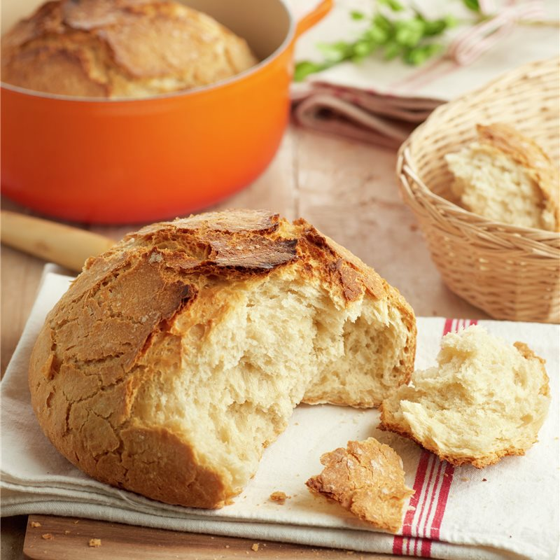

Pan casero

El pan casero es una de las preparaciones más antiguas y populares del mundo. Gracias a la combinación de harina, agua, levadura y sal, es posible obtener un pan con un aroma y un sabor incomparables. Esta receta es perfecta para quienes desean iniciarse en el mundo de la panadería, ya que no requiere demasiados ingredientes y el proceso es bastante sencillo.